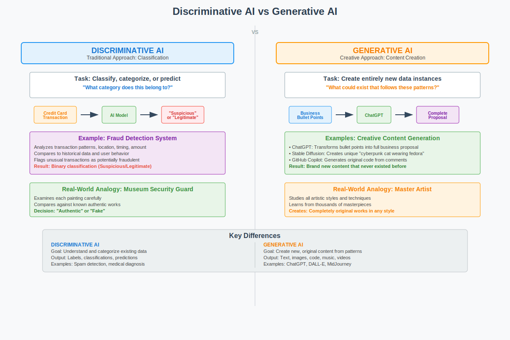
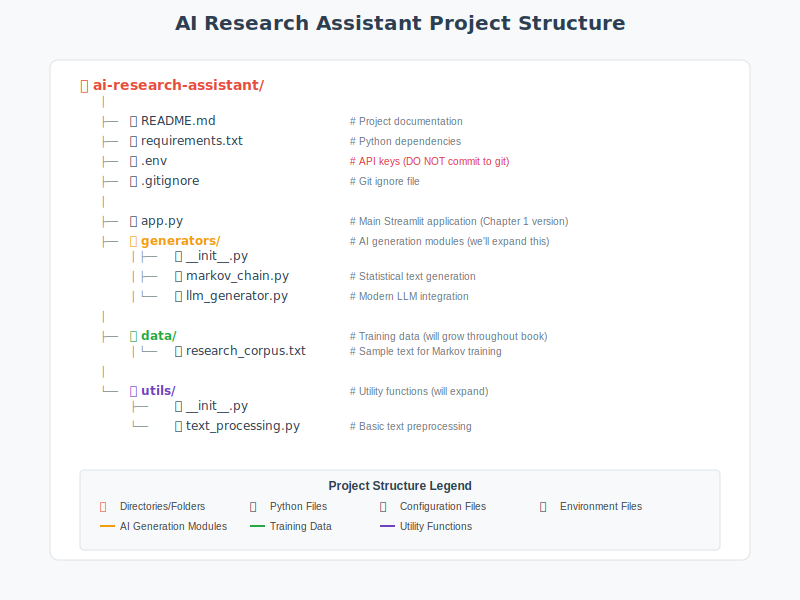

Chapter 1: Foundations of Generative AI
Introduction
Welcome to your journey into the fascinating world of Generative Artificial Intelligence! If you’ve ever wondered how ChatGPT writes coherent essays, how DALL-E creates stunning artwork from text descriptions, or how GitHub Copilot suggests code completions, you’re about to discover the foundational principles that make these remarkable capabilities possible.
This opening chapter lays the groundwork for understanding how machines can create human-like text, images, and other content that often seems indistinguishable from human-generated work. We’ll explore the remarkable evolution from simple rule-based systems of the 1960s to today’s powerful Large Language Models (LLMs) that can write essays, answer complex questions, engage in creative storytelling, and even help with programming tasks.
But this isn’t just a theoretical exploration. Throughout this chapter, you’ll not only learn the fundamental concepts but also get your hands dirty by building the foundation of an AI-powered research assistant. This practical component will help solidify your understanding as you see these concepts come to life in working code.
What You’ll Learn
By the end of this chapter, you will:
- Understand the core principles that enable machines to generate human-like content
- Trace the historical evolution from early AI systems to modern generative models
- Grasp the key concepts of neural networks, transformers, and attention mechanisms
- Distinguish between different types of generative AI approaches and their use cases
- Build a working prototype research assistant that demonstrates multiple AI techniques
- Evaluate the strengths, limitations, and ethical considerations of generative AI systems
Your Practical Project
As we progress through the theoretical concepts, you’ll simultaneously develop an AI-powered research assistant that can:
- Accept user queries in natural language
- Generate responses using different AI approaches (rule-based, retrieval-based, and generative)
- Demonstrate the evolution of AI capabilities we’ll discuss
- Serve as a foundation for more advanced projects in subsequent chapters
This hands-on approach ensures that abstract concepts become concrete understanding, preparing you not just to use generative AI tools, but to build and customize them for your own needs.
A Note on the Journey Ahead
Generative AI represents one of the most exciting frontiers in computer science today. While the underlying mathematics can be complex, our approach will be to build intuition first, then gradually introduce the technical details. Don’t worry if some concepts seem challenging at first, each chapter builds carefully on the previous one. By the end of this book, you’ll have both the theoretical knowledge and practical skills to work confidently with large language models.
Let’s begin this adventure together!
Learning Outcomes
By the end of this chapter, you will be able to:
- Define generative AI and explain how it differs from traditional AI approaches
- Identify the key components and architecture of generative systems
- Understand the evolution from rule-based systems to neural networks to transformers
- Explain fundamental concepts like tokens, embeddings, and probability distributions
- Set up a complete development environment for generative AI projects
- Build a simple text generator using multiple approaches (Markov chains and API-based)
- Compare the outputs and limitations of different generative approaches
- Implement the foundational architecture for an AI research assistant
Key Terminologies and Concepts
| Term | Definition | Example/Context |
|---|---|---|
| Generative AI | AI systems that create new content (text, images, code) rather than just classifying or predicting existing data | ChatGPT writing an essay, DALL-E creating images |
| Large Language Model (LLM) | Neural networks trained on vast amounts of text data to understand and generate human-like language | GPT-4, Claude, Llama 2 |
| Token | The smallest unit of text that a model processes, often words or parts of words | “Hello” = 1 token, “ChatGPT” = 2 tokens |
| Embedding | A numerical representation of text that captures semantic meaning in high-dimensional space | Converting “dog” to a vector like [0.2, -0.1, 0.8, …] |
| Transformer | A neural network architecture that uses attention mechanisms to process sequential data | The “T” in GPT (Generative Pre-trained Transformer) |
| Attention Mechanism | A technique that allows models to focus on relevant parts of input when generating output | Focusing on “Paris” when answering “What is the capital of France?” |
| Pre-training | The initial phase where models learn language patterns from massive text datasets | Training GPT on books, articles, and web content |
| Fine-tuning | Adapting a pre-trained model for specific tasks or domains | Training a medical AI assistant using healthcare data |
| Inference | The process of using a trained model to generate new outputs | Asking ChatGPT a question and receiving an answer |
| Prompt | The input text given to a generative model to elicit a specific response | “Write a professional email about…” |
| Temperature | A parameter controlling randomness in model outputs (0 = deterministic, 1+ = creative) | Low temperature for factual answers, high for creative writing |
| API (Application Programming Interface) | A way for different software applications to communicate and share functionality | Using OpenAI’s API to access GPT models in your app |
1.1 What is Generative AI?
Imagine having a conversation with a computer that doesn’t just understand what you’re saying, but can respond with original thoughts, create stories you’ve never heard, or even write code to solve problems you describe in plain English. This isn’t science fiction; it’s the reality of Generative Artificial Intelligence.
Generative Artificial Intelligence (GenAI) is a subset of AI that focuses on creating new, original content, such as text, images, music, videos, or even code, rather than merely analyzing or classifying existing data. Think of it as the difference between a critic who can tell you whether a painting is a Picasso or a Monet, versus an artist who can create an entirely new painting in either style.
Unlike traditional AI systems that operate on discriminative models (like spam detection or sentiment analysis), generative AI leverages sophisticated probabilistic models to synthesize novel outputs that capture and extend the patterns found in their training data.
Key Distinctions: The Analyst vs. The Creator
To understand what makes generative AI special, let’s compare it with traditional AI approaches:

Figure 1.1: Discriminative AI vs Generative AI - Fundamental Approaches to Artificial Intelligence
To understand what makes generative AI truly revolutionary, we need to appreciate the fundamental difference between the two approaches to artificial intelligence.
Discriminative AI represents the traditional approach that most people think of when they hear “artificial intelligence.” These systems excel at classification and prediction tasks, they analyze input data and categorize it into predefined groups. A spam filter examines an email and decides “spam” or “not spam.” A sentiment analyzer reads a product review and determines “positive,” “negative,” or “neutral.” A medical diagnostic system looks at symptoms and suggests possible conditions from a known list.
The key characteristic of discriminative AI is that it works within boundaries defined by its training data. It can only choose from options it has seen before. If you show a spam filter a completely new type of message, it can still classify it as spam or not spam, but it cannot create a new category or explain why in novel terms.
Generative AI, by contrast, creates something new that didn’t exist before. When you ask ChatGPT to “write a poem about artificial intelligence in the style of Shakespeare,” it doesn’t search through a database of pre-written poems to find a match. Instead, it generates an entirely original poem, word by word, that captures Shakespearean language patterns while addressing a topic Shakespeare never wrote about.
Consider this practical distinction:
- Discriminative task: “Is this customer review positive or negative?” → classifies existing content
- Generative task: “Write a positive review for this product” → creates new content
Why It’s Revolutionary
The revolutionary nature of generative AI lies in its ability to extrapolate beyond its training data in meaningful ways. When Stable Diffusion generates a completely unique image of a “cyberpunk cat wearing a space helmet,” it’s not copying any image from its training set. Instead, it has learned the underlying concepts of “cyberpunk aesthetics,” “cats,” “space helmets,” and “artistic composition,” then combines them into something novel.
This same principle applies to text generation:
- Text: Given the prompt “Describe a futuristic city,” a model might generate: “Neon towers stretched into smog-choked skies, their reflections shimmering on rain-slick streets where autonomous drones hummed like mechanical insects.”
- Code: Tools like GitHub Copilot can autocomplete a Python function based on a comment (e.g., “# calculate Fibonacci sequence”)
The model isn’t retrieving this text from a database; it’s constructing it based on patterns learned from millions of examples of descriptive writing and coding patterns.
The Fundamental Mechanism
At its core, most generative AI for text operates on a deceptively simple principle: predict the next token. Given a sequence of words, what word is most likely to come next? This is essentially a very sophisticated version of your phone’s autocomplete feature, but trained on hundreds of billions of words and capable of maintaining coherence across thousands of tokens.
What makes this simple mechanism so powerful is the scale of training and the sophistication of the underlying neural network architecture. When trained on enough diverse text, these models develop what researchers call “emergent capabilities”, abilities that weren’t explicitly programmed but arise from the patterns learned during training. These include:
- Understanding context and nuance
- Following complex instructions
- Reasoning through multi-step problems
- Adapting writing style to different contexts
1.2 The Evolution of Text Generation
Understanding where we are requires knowing where we’ve been. The journey from early AI systems to today’s large language models is a fascinating story of incremental breakthroughs, dead ends, and revolutionary insights.
The Early Dreamers (1950s-1960s)
The dream of machines that could understand and generate human language is as old as computing itself. In 1950, Alan Turing proposed his famous “Imitation Game” (now called the Turing Test), asking whether machines could exhibit intelligent behavior indistinguishable from humans in conversation.
ELIZA (1966): The first program that made people feel like they were talking to an intelligent entity was remarkably simple. Created by Joseph Weizenbaum at MIT, ELIZA used pattern matching and substitution rules to simulate a Rogerian psychotherapist.
If you typed: “I am feeling sad today” ELIZA might respond: “Why do you say you are feeling sad today?”
ELIZA didn’t understand anything, it simply recognized patterns and applied rules. Yet people became emotionally attached to it, revealing an important truth about human psychology that remains relevant today: we readily anthropomorphize systems that respond in human-like ways.
The Statistical Revolution (1980s-1990s)
As computing power grew, researchers began applying statistical methods to language. The key insight was that language has predictable patterns that can be captured mathematically.
N-gram Models became the workhorse of this era. These models predict the next word based on the previous N-1 words:
- Bigram (N=2): Predicts based on the previous word
- “The cat sat on the ___” → most likely “mat” or “floor”
- Trigram (N=3): Uses two previous words for more context
- “The cat sat ” → different predictions than just ”sat ”
Limitations: N-gram models struggle with long-range dependencies. In the sentence “The trophy doesn’t fit in the suitcase because it is too big,” understanding that “it” refers to “trophy” requires looking back several words, beyond typical N-gram ranges.
The Neural Network Era (2000s-2010s)
Neural networks, while invented decades earlier, became practical for language processing in the 2000s with increased computing power and better training techniques.
Recurrent Neural Networks (RNNs) introduced the concept of “memory”, instead of just looking at immediate neighbors, these systems could remember and use information from earlier in a sequence.
Long Short-Term Memory (LSTM) networks solved a critical problem: standard RNNs would “forget” information over long sequences. LSTMs introduced sophisticated gates that control what information to remember, forget, and output.
By the mid-2010s, LSTM-based systems achieved impressive results:
- Google’s Smart Compose could predict the next words in an email
- Translation services improved dramatically
- Basic conversational AI became possible
But there were limitations: Processing was sequential (one word at a time), making training slow. Long documents still posed challenges, and training required careful tuning.
The Transformer Revolution (2017-Present)
The 2017 paper “Attention Is All You Need” by Vaswani et al. changed everything. The Transformer architecture introduced several revolutionary concepts:
- Parallel Processing: Unlike RNNs, Transformers process all words simultaneously
- Self-Attention: Every word can directly attend to every other word, regardless of distance
- Scalability: The architecture scales efficiently with more compute and data
GPT-1 (2018): OpenAI’s first Generative Pre-trained Transformer demonstrated that pre-training on large text corpora, then fine-tuning for specific tasks, could achieve impressive results across multiple benchmarks.
GPT-2 (2019): A larger model that could generate coherent multi-paragraph text. OpenAI initially withheld the full model due to concerns about misuse, our first hint of the ethical challenges to come.
GPT-3 (2020): At 175 billion parameters, GPT-3 demonstrated remarkable “few-shot learning”, it could perform tasks it was never explicitly trained on, just by seeing a few examples in the prompt.
Example prompt:
Translate English to French:
sea otter => loutre de mer
cheese => fromage
artificial intelligence =>GPT-3 could correctly complete this with “intelligence artificielle” without ever being explicitly trained as a translator.
Current Generation (2022-Present):
- GPT-4: Multimodal capabilities (text and images), improved reasoning
- Claude: Focus on helpfulness, harmlessness, and honesty
- Llama: Open-source models enabling broader research and customization
- Gemini: Google’s multimodal model with web integration
Capabilities Today
Modern LLMs can:
- Question answering: “What causes rainbows?” → generates scientifically accurate explanation
- Code generation: “Write a Python function to calculate prime numbers” → generates working code
- Creative writing: “Write a haiku about artificial intelligence” → creates original poetry
ChatGPT and Beyond: Today’s models can engage in extended conversations, maintain context across thousands of words, write in specific styles, and even help debug their own generated code.

Figure 1.2: The Evolution of Text Generation - From Rule-Based Systems to Modern Transformers
Connecting to Your Journey
As you build your research assistant throughout this chapter, you’ll experience this evolution firsthand:
- Phase 1: Rule-based responses (like ELIZA)
- Phase 2: Retrieval-based answers (like statistical methods)
- Phase 3: Generative responses (using modern transformers)
This hands-on progression will make the theoretical concepts we’ve just covered much more concrete and help you understand why each advancement was necessary.
Looking Forward
We’ve come from systems that could barely maintain a coherent conversation to AI that can write novels, solve complex problems, and even engage in philosophical discussions. But this is just the beginning. As we’ll explore in the next section, understanding the different types of generative models will help you choose the right approach for different tasks and understand the exciting developments still to come.
The most remarkable part? We’re still in the early days of this revolution.
1.3 Understanding Tokens and Embeddings
Before we dive into how modern AI generates text, we need to understand how it “sees” and “thinks about” language. Just as you might break down a complex recipe into individual steps, AI systems need to break down text into manageable pieces they can work with.
Tokenization: Breaking Language into Building Blocks
Imagine trying to teach someone a language by showing them individual LEGO blocks versus showing them complete LEGO structures. Tokenization is the process of deciding what size “blocks” to use when feeding text to an AI model.
Word-Level Tokenization: The Whole LEGO Sets Approach
The most intuitive approach treats each word as a single token:
- “The quick brown fox” → [“The”, “quick”, “brown”, “fox”]
This seems natural to humans, but creates problems for AI:
- Vocabulary explosion: English has hundreds of thousands of words, and new ones appear constantly (“selfie,” “blockchain,” “unfriend”)
- Unknown words: What happens when the model encounters “supercalifragilisticexpialidocious”?
- Memory inefficiency: Storing every possible word requires enormous vocabulary lists
Subword-Level Tokenization (BPE): The Smart LEGO Approach
Byte-Pair Encoding (BPE) finds the sweet spot by learning meaningful chunks smaller than words but larger than characters. It’s like having LEGO blocks of different sizes, some individual pieces, some pre-assembled sections.
Example breakdown:
- “Unhappiness” → [“un”, “happiness”]
- “Unfriendly” → [“un”, “friendly”]
- “Preprocessing” → [“pre”, “process”, “ing”]
Why this is brilliant:
- The model learns that “un-” typically means negation
- It can handle new words by combining familiar pieces
- “Unfathomable” → [“un”, “fathom”, “able”] (even if it’s never seen this exact word)
Character-Level Tokenization: The Individual LEGO Brick Approach
Breaking text down to individual characters:
- “Hello” → [“H”, “e”, “l”, “l”, “o”]
While this eliminates vocabulary issues entirely, it’s like trying to understand a book by looking at one letter at a time, technically possible, but requiring enormous context to make sense of meaning.
Embeddings: Teaching AI the Geography of Meaning
Here’s where things get fascinating. Once text is tokenized, each token needs to be converted into numbers that a computer can actually work with. But not just any numbers, these numbers need to capture the meaning and relationships between words.
The Vector Space of Language
Imagine a vast multidimensional space (typically 768 or 1,024 dimensions, though we can only visualize 2 or 3) where every word has a specific location. Words with similar meanings live in the same neighborhood, while different concepts are far apart.
The Famous Example:
Vector(“king”) - Vector(“man”) + Vector(“woman”) ≈ Vector(“queen”)
This isn’t just a mathematical curiosity, it reveals that the model has learned conceptual relationships:
- Gender relationships: king/queen, man/woman, actor/actress
- Comparative relationships: good/better/best, big/bigger/biggest
- Categorical relationships: dog/puppy/canine cluster together
Real-World Implications
When you ask ChatGPT about “canines,” it automatically connects this to dogs, wolves, puppies, and veterinarians, not because it was explicitly programmed with these connections, but because these concepts live close together in its learned embedding space.
In your research assistant project, you’ll see how embeddings allow the system to find relevant information even when your question uses different words than the source material.
1.4 The Transformer Architecture
Now that we understand how text becomes numbers, let’s explore the revolutionary architecture that processes these numbers to generate intelligent responses.
The Attention Revolution: Focus on What Matters
Imagine reading a complex sentence while highlighting the most important words for understanding its meaning. The self-attention mechanism does exactly this, for every word, it determines which other words in the sentence are most relevant for understanding it.
Self-Attention in Action
Consider the sentence: “The animal didn’t cross the street because it was tired.”
When processing the word “it,” the attention mechanism:
- Looks at all other words in the sentence
- Calculates relevance scores: How important is each word for understanding “it”?
- “animal”: High relevance (0.8)
- “street”: Low relevance (0.1)
- “tired”: Medium relevance (0.4)
- “didn’t”: Low relevance (0.1)
- Creates a weighted understanding of “it” based on these scores
This is why modern AI can correctly understand that “it” refers to “the animal,” not “the street”, something that tripped up earlier AI systems regularly.
Multiple Attention Heads: Different Perspectives
Transformers don’t just use one attention mechanism, they use many (typically 8-16) attention “heads” simultaneously, each focusing on different types of relationships:
- Head 1: Might focus on subject-verb relationships
- Head 2: Might track pronoun references
- Head 3: Might identify cause-and-effect connections
- Head 4: Might recognize sentiment patterns
Core Architecture Components
1. Encoder-Decoder Structure (in some models)
Think of this like a translator who first completely understands a sentence in one language (encoder) before producing the translation (decoder):
- Encoder: “Je suis heureux” → [deep understanding representation]
- Decoder: [deep understanding] → “I am happy”
Note: GPT models are decoder-only, while BERT is encoder-only. Different architectures excel at different tasks.
2. Positional Encoding: Keeping Track of Order
Since Transformers process all words simultaneously (unlike humans who read left-to-right), they need a way to understand word order. Positional encoding adds a unique “position signature” to each word:
- “Dog bites man” vs. “Man bites dog” have the same words but very different meanings
- Positional encoding ensures the model knows which word came first
3. Layer Stacking: Deep Understanding
Modern Transformers stack many layers (GPT-3 has 96 layers), with each layer building more sophisticated understanding:
- Layer 1: Basic grammar and syntax
- Layer 20: Complex relationships and context
- Layer 50: Abstract reasoning and world knowledge
- Layer 96: Sophisticated inference and generation

Figure 1.3: Transformer Architecture - Core Components and Information Flow
1.5 How Large Language Models Work
Now let’s put it all together and understand how these components combine to create the AI assistants we interact with today.
Training Phase: Learning from the Internet
The Objective: Becoming a Prediction Master
LLMs are trained on a deceptively simple task: predict the next word. Given “The sky is ___,” the model learns that “blue,” “gray,” or “cloudy” are more likely than “purple” or “triangular.”
But this simple objective, applied to trillions of words, leads to emergent understanding of:
- Grammar: Learning language rules through pattern recognition
- Facts: “The capital of France is ___” → “Paris”
- Reasoning: “If it’s raining, then the ground will be ___” → “wet”
- Style: Formal vs. casual language patterns
- Context: Understanding how meaning changes in different situations
The Scale Factor
What makes modern LLMs different from earlier attempts isn’t fundamentally new algorithms, it’s scale:
| Model | Year | Parameters | Training Data |
|---|---|---|---|
| GPT-1 | 2018 | 117 million | ~5GB text |
| GPT-2 | 2019 | 1.5 billion | ~40GB text |
| GPT-3 | 2020 | 175 billion | ~570GB text |
| GPT-4 | 2023 | ~1.7 trillion* | Unknown |
Estimated; OpenAI hasn’t disclosed exact figures
Inference: Generating Text One Token at a Time
When you send a prompt to ChatGPT, here’s what happens:
- Tokenization: Your text is broken into tokens
- Embedding: Each token becomes a high-dimensional vector
- Processing: The transformer layers process these vectors
- Prediction: The model outputs probabilities for the next token
- Selection: A token is chosen (affected by temperature setting)
- Repeat: Steps 1-5 repeat until the response is complete
The Temperature Dial
Temperature controls the “creativity” of outputs:
- Temperature 0: Always picks the most likely token (deterministic, repetitive)
- Temperature 0.7: Balanced between coherence and creativity (common default)
- Temperature 1.0+: More random, creative, but potentially incoherent
Example with the prompt “The best way to learn programming is…”:
- Temperature 0: “…to practice regularly and work on projects.”
- Temperature 0.7: “…to dive into real projects that challenge you while building a strong foundation in fundamentals.”
- Temperature 1.2: “…to dance with code like a curious explorer mapping uncharted digital territories.”
Context Windows: The Model’s Working Memory
Every LLM has a context window, the maximum amount of text it can “see” at once. This includes both your input and the generated output.
| Model | Context Window |
|---|---|
| GPT-3.5 | 4,096 tokens (~3,000 words) |
| GPT-4 | 8,192-128,000 tokens |
| Claude 2 | 100,000 tokens (~75,000 words) |
| Llama 2 | 4,096 tokens |
Why this matters:
- Longer context = better understanding of complex documents
- Longer context = higher computational cost
- Beyond the context window, the model literally cannot see earlier content
Connecting to Your Project
Understanding these mechanisms helps you make better decisions when building AI applications:
- Tokenization awareness when designing prompts
- Temperature tuning for different use cases
- Context management for long conversations
- Generation strategies when crafting responses
- Hallucination mitigation when implementing fact-checking features
Understanding these fundamentals will help you build more effective AI applications and debug issues when they arise.

Figure 1.4: Summary of Foundational Concepts in Generative AI
Core Project: Building an AI-Powered Research Assistant
Project Overview
Welcome to the beginning of an exciting journey! Over the course of this book, we’ll progressively build a sophisticated AI-powered research assistant. This chapter focuses on laying the foundation, creating a simple but extensible system that we’ll enhance with new capabilities in each subsequent chapter.
What We’re Building in Chapter 1: By the end of this chapter, you’ll have a basic research assistant that can:
- Accept user research queries through a clean web interface
- Generate responses using Markov chains (demonstrating statistical text generation from the 1990s)
- Compare those responses with modern LLM outputs (showing the power of current AI)
- Provide a solid foundation for the advanced features we’ll add in later chapters
This isn’t our final destination; it’s the launchpad for a system that will eventually include RAG capabilities, multimodal processing, fine-tuned models, and production deployment features.
What You’ll Learn in This Foundation:
- How to structure a modular, extensible AI application
- The practical differences between statistical and neural text generation
- How to integrate modern LLM APIs safely and effectively
- Best practices for building user-friendly AI interfaces
- How to create a codebase that can grow throughout this book
Project Structure
Let’s start with a clean, simple structure that we’ll expand throughout the book:

Figure 1.5: Project Structure for the AI Research Assistant
Note: This is our starting structure. As we progress through the book, we’ll add:
- Chapter 2: Model comparison and selection tools
- Chapter 3: Advanced prompt engineering modules
- Chapter 4: Multi-provider API integration
- Chapter 5: Vector database and RAG components
- Chapter 6: Fine-tuning and model customization tools
- …and much more!
Step 1: Setting Up Your Development Environment
Before we write any code, let’s create a solid development environment. This setup will serve you throughout the book and is similar to what you’d use in professional AI development.
1.1 Understanding Project Organization
Professional AI projects need clean organization. Here’s our structure:
research_assistant/
├── app.py # Main Streamlit application
├── generators.py # Text generation classes
├── requirements.txt # Project dependencies
├── .env # API keys (never commit this!)
└── .gitignore # Files to exclude from git1.2 Creating Your Project Directory
Open your terminal and navigate to where you want to create your project:
# Create the project directory
mkdir research_assistant
cd research_assistant
# Create empty files for our project
touch app.py generators.py requirements.txt .env .gitignore1.3 Understanding Virtual Environments
Why Virtual Environments Matter:
Think of virtual environments as isolated containers for your project. Without them:
- Installing a package for Project A might break Project B
- Different projects might need different versions of the same library
- Your global Python installation becomes cluttered
Creating Your Virtual Environment:
# Create a virtual environment named 'venv'
python -m venv venv
# Activate it (you'll need to do this each time you work on the project)
# On macOS/Linux:
source venv/bin/activate
# On Windows:
venv\Scripts\activate
# You'll see (venv) appear in your terminal prompt💡 Pro Tip: Always activate your virtual environment before installing packages or running your code. If you see
(venv)in your terminal prompt, you’re good to go!
1.4 Installing Dependencies
Create your requirements.txt file with these dependencies:
# Core dependencies for Chapter 1
streamlit>=1.28.0
openai>=1.0.0
python-dotenv>=1.0.0Now install them:
pip install -r requirements.txtUnderstanding each dependency:
streamlit: Creates beautiful web interfaces with minimal codeopenai: Official library for accessing GPT modelspython-dotenv: Safely loads API keys from environment files
1.5 Setting Up Your API Key
Getting an OpenAI API Key:
- Visit platform.openai.com
- Create an account or sign in
- Navigate to API Keys section
- Click “Create new secret key”
- ⚠️ Critical: Copy immediately, you won’t see it again!
Storing Your Key Safely:
Add your API key to the .env file:
OPENAI_API_KEY=sk-your-api-key-hereSecurity Best Practice: Add .env to your .gitignore file:
# .gitignore
.env
venv/
__pycache__/
*.pyc⚠️ Warning: Never commit API keys to version control. A leaked key can result in unexpected charges and security vulnerabilities.
Step 2: Building Your Text Generators
Now comes the exciting part, building the intelligence layer of your research assistant. We’ll create two different approaches to text generation, each representing different eras of AI development.
2.1 The Text Generators Module
Create generators.py with the following content:
"""
Text Generation Module for AI Research Assistant
Chapter 1: Foundations of Generative AI
This module contains two text generators that demonstrate the evolution
of AI text generation:
1. MarkovChainGenerator: Statistical text generation (1990s approach)
2. LLMGenerator: Modern large language model generation (2020s approach)
The comparison between these approaches helps illustrate why transformers
revolutionized natural language processing.
"""
import random
import re
from collections import defaultdict
from typing import Optional
from openai import OpenAI
import os
from dotenv import load_dotenv
# Load environment variables from .env file
load_dotenv()
class MarkovChainGenerator:
"""
A Markov Chain text generator that learns patterns from training text.
This represents the statistical approach to text generation that dominated
the 1990s and early 2000s. It predicts the next word based only on the
previous N words (the 'order' of the chain).
Limitations demonstrated:
- No understanding of meaning or context
- Can only reproduce patterns it has seen
- Struggles with long-range dependencies
- No ability to follow instructions or answer questions
Attributes:
order (int): Number of previous words to consider
chain (dict): Transition probabilities between word sequences
starts (list): Valid starting sequences for generation
"""
def __init__(self, order: int = 2):
"""
Initialize the Markov chain.
Args:
order: Number of previous words to consider when predicting
the next word. Higher = more coherent but less creative.
"""
self.order = order
self.chain = defaultdict(list)
self.starts = []
def _preprocess_text(self, text: str) -> list:
"""
Clean and tokenize input text.
This preprocessing step is crucial for building a useful model:
- Normalizes whitespace
- Handles basic punctuation
- Creates a list of tokens (words)
Args:
text: Raw input text
Returns:
List of cleaned tokens
"""
# Normalize whitespace and convert to lowercase
text = re.sub(r'\s+', ' ', text.strip().lower())
# Split into words while keeping some punctuation attached
words = text.split()
return words
def train(self, text: str) -> None:
"""
Learn patterns from the provided training text.
The training process:
1. Preprocess the text into tokens
2. Create sequences of 'order' words
3. Record what word follows each sequence
4. Track valid starting sequences
Args:
text: Training text to learn patterns from
"""
words = self._preprocess_text(text)
if len(words) < self.order + 1:
raise ValueError(
f"Training text too short. Need at least {self.order + 1} words."
)
# Build the transition chain
for i in range(len(words) - self.order):
# Create a tuple of 'order' words as the key
key = tuple(words[i:i + self.order])
# The next word is the value
next_word = words[i + self.order]
self.chain[key].append(next_word)
# Track sentence starts (after periods)
if i == 0 or words[i - 1].endswith('.'):
self.starts.append(key)
# If no starts found, use all keys as potential starts
if not self.starts:
self.starts = list(self.chain.keys())
def generate(self, prompt: str = "", max_words: int = 50) -> str:
"""
Generate text based on learned patterns.
The generation process:
1. Start with the prompt or a random starting sequence
2. Look up what words can follow the current sequence
3. Randomly choose one of those words
4. Shift the window and repeat
Args:
prompt: Optional starting text (may be modified to fit chain)
max_words: Maximum number of words to generate
Returns:
Generated text string
"""
if not self.chain:
return "Error: Model not trained. Please train with text first."
# Try to use the prompt, or start randomly
if prompt:
prompt_words = self._preprocess_text(prompt)
if len(prompt_words) >= self.order:
current = tuple(prompt_words[-self.order:])
if current not in self.chain:
current = random.choice(self.starts)
else:
current = random.choice(self.starts)
else:
current = random.choice(self.starts)
# Generate words
result = list(current)
for _ in range(max_words - self.order):
if current not in self.chain:
break
next_word = random.choice(self.chain[current])
result.append(next_word)
current = tuple(result[-self.order:])
return ' '.join(result)
@property
def vocabulary_size(self) -> int:
"""Return the number of unique word sequences learned."""
return len(self.chain)
@property
def total_transitions(self) -> int:
"""Return the total number of transitions learned."""
return sum(len(words) for words in self.chain.values())
class LLMGenerator:
"""
A wrapper for OpenAI's GPT models demonstrating modern LLM capabilities.
This represents the current state-of-the-art in text generation (2020s).
Unlike Markov chains, LLMs:
- Understand context and meaning
- Can follow complex instructions
- Generate coherent long-form text
- Answer questions accurately
- Adapt to different styles and formats
Attributes:
client: OpenAI API client
model: Which GPT model to use
temperature: Controls randomness (0=deterministic, 1=creative)
"""
def __init__(
self,
model: str = "gpt-3.5-turbo",
temperature: float = 0.7
):
"""
Initialize the LLM generator.
Args:
model: OpenAI model to use (e.g., "gpt-3.5-turbo", "gpt-4")
temperature: Sampling temperature (0.0 to 2.0)
"""
self.model = model
self.temperature = temperature
# Initialize the OpenAI client
api_key = os.getenv("OPENAI_API_KEY")
if not api_key:
raise ValueError(
"OpenAI API key not found. "
"Please set OPENAI_API_KEY in your .env file."
)
self.client = OpenAI(api_key=api_key)
def generate(
self,
prompt: str,
system_prompt: Optional[str] = None,
max_tokens: int = 500
) -> str:
"""
Generate text using the OpenAI API.
This method demonstrates the chat completion API, which is the
standard interface for modern LLMs. Key concepts:
- System prompt: Sets the AI's behavior and context
- User prompt: The actual query or request
- Temperature: Controls creativity vs. consistency
- Max tokens: Limits response length
Args:
prompt: The user's input/question
system_prompt: Optional context/instructions for the AI
max_tokens: Maximum response length
Returns:
Generated text from the LLM
"""
if not system_prompt:
system_prompt = (
"You are a helpful research assistant. "
"Provide clear, accurate, and well-organized responses."
)
try:
response = self.client.chat.completions.create(
model=self.model,
messages=[
{"role": "system", "content": system_prompt},
{"role": "user", "content": prompt}
],
temperature=self.temperature,
max_tokens=max_tokens
)
return response.choices[0].message.content
except Exception as e:
return f"Error generating response: {str(e)}"
def generate_with_context(
self,
prompt: str,
context: str,
max_tokens: int = 500
) -> str:
"""
Generate a response with additional context.
This demonstrates how LLMs can use provided information to give
more accurate, grounded responses, a preview of RAG (Retrieval
Augmented Generation) that we'll explore in Chapter 5.
Args:
prompt: The user's question
context: Additional information to consider
max_tokens: Maximum response length
Returns:
Context-aware generated response
"""
system_prompt = (
"You are a helpful research assistant. "
"Use the provided context to answer the user's question. "
"If the context doesn't contain relevant information, "
"say so and provide your best general knowledge answer."
)
full_prompt = f"Context:\n{context}\n\nQuestion: {prompt}"
return self.generate(
prompt=full_prompt,
system_prompt=system_prompt,
max_tokens=max_tokens
)2.2 Understanding the Code
The Markov Chain Generator:
- Learns by recording which words follow which sequences
- Uses probability to choose the next word
- Has no understanding of meaning, just patterns
- Represents 1990s-era statistical NLP
The LLM Generator:
- Uses OpenAI’s API to access GPT models
- Understands context, instructions, and meaning
- Can adapt to different tasks and styles
- Represents current state-of-the-art
Step 3: Creating the Application Interface
Now let’s build a beautiful, educational interface using Streamlit.
3.1 The Complete Application
Create app.py with the following content:
"""
AI Research Assistant - Chapter 1
Foundations of Generative AI
This Streamlit application demonstrates the evolution of text generation
by comparing:
1. Markov Chain generation (statistical, 1990s)
2. Large Language Model generation (neural, 2020s)
Features:
- Side-by-side comparison of generation approaches
- Educational explanations of how each method works
- Interactive controls for experimentation
- Sample training data for the Markov model
Run with: streamlit run app.py
"""
import streamlit as st
from generators import MarkovChainGenerator, LLMGenerator
# =============================================================================
# Page Configuration
# =============================================================================
st.set_page_config(
page_title="AI Research Assistant",
page_icon="🔬",
layout="wide",
initial_sidebar_state="expanded"
)
# =============================================================================
# Sample Training Data
# =============================================================================
# This text trains our Markov chain model
# It covers research and AI topics so the model can generate
# somewhat relevant text for research queries
SAMPLE_TRAINING_TEXT = """
Artificial intelligence research has made remarkable progress in recent years.
Machine learning models can now understand and generate human language with
impressive accuracy. Natural language processing enables computers to read,
understand, and generate text that sounds human-written.
Research in deep learning has led to breakthroughs in many fields. Neural
networks can recognize images, translate languages, and even write code.
The transformer architecture revolutionized how we process sequential data.
Scientific research requires careful methodology and rigorous analysis.
Researchers collect data, form hypotheses, and test their theories through
experiments. The scientific method ensures that findings are reliable and
reproducible.
Large language models learn from vast amounts of text data. They understand
context, grammar, and even subtle nuances in language. These models can
answer questions, summarize documents, and assist with writing tasks.
The future of AI research holds exciting possibilities. Researchers are
working on making AI systems more efficient, more capable, and more aligned
with human values. Understanding how these systems work is crucial for
developing them responsibly.
"""
# =============================================================================
# Initialize Session State
# =============================================================================
def initialize_session_state():
"""Initialize all session state variables."""
if 'markov_model' not in st.session_state:
st.session_state.markov_model = MarkovChainGenerator(order=2)
st.session_state.markov_model.train(SAMPLE_TRAINING_TEXT)
if 'llm_model' not in st.session_state:
try:
st.session_state.llm_model = LLMGenerator()
st.session_state.llm_available = True
except ValueError as e:
st.session_state.llm_model = None
st.session_state.llm_available = False
st.session_state.llm_error = str(e)
initialize_session_state()
# =============================================================================
# Sidebar
# =============================================================================
with st.sidebar:
st.title("🔬 Research Assistant")
st.markdown("---")
st.subheader("📚 About This Project")
st.markdown("""
This is **Chapter 1** of your AI journey!
You're exploring two fundamentally different
approaches to text generation:
**🎲 Markov Chains** (1990s)
- Statistical patterns
- No understanding
- Fast but limited
**🧠 Large Language Models** (2020s)
- Deep understanding
- Context awareness
- Powerful but complex
""")
st.markdown("---")
st.subheader("⚙️ Settings")
generation_method = st.radio(
"Generation Method:",
["Compare Both", "Markov Only", "LLM Only"],
help="Choose which generation method(s) to use"
)
max_words = st.slider(
"Max Words (Markov):",
min_value=20,
max_value=200,
value=75,
help="Maximum words for Markov generation"
)
st.markdown("---")
st.subheader("💡 Sample Questions")
sample_questions = [
"What is artificial intelligence?",
"How do neural networks learn?",
"Explain the scientific method",
"What are transformers in AI?",
"How does machine learning work?"
]
for q in sample_questions:
if st.button(q, key=f"sample_{q}"):
st.session_state.current_query = q
# =============================================================================
# Main Content
# =============================================================================
st.title("🔬 AI Research Assistant")
st.markdown("### Comparing Statistical and Neural Text Generation")
st.markdown("""
Welcome to your AI Research Assistant! This tool demonstrates the dramatic
evolution in text generation technology by comparing **Markov chains**
(a 1990s statistical approach) with **modern Large Language Models**.
Enter a research question below to see how each approach responds.
""")
# Input Section
col1, col2 = st.columns([3, 1])
with col1:
# Check if we have a sample question to use
default_query = st.session_state.get('current_query', '')
query = st.text_area(
"Enter your research question:",
value=default_query,
height=100,
placeholder="e.g., What is artificial intelligence and how does it work?"
)
with col2:
st.markdown("<br>", unsafe_allow_html=True)
generate_button = st.button("🚀 Generate Responses", type="primary", use_container_width=True)
if st.button("🔄 Clear", use_container_width=True):
st.session_state.current_query = ''
st.rerun()
# Generation Section
if generate_button and query:
st.markdown("---")
st.subheader("📊 Results Comparison")
# Create columns based on selected method
if generation_method == "Compare Both":
col_markov, col_llm = st.columns(2)
elif generation_method == "Markov Only":
col_markov = st.container()
col_llm = None
else:
col_markov = None
col_llm = st.container()
# Markov Chain Generation
if col_markov:
with col_markov:
st.markdown("### 🎲 Markov Chain Response")
st.caption("Statistical text generation (1990s approach)")
with st.spinner("Generating with Markov chain..."):
markov_response = st.session_state.markov_model.generate(
prompt=query,
max_words=max_words
)
st.markdown(f"**Generated Text:**")
st.info(markov_response)
with st.expander("ℹ️ How Markov Chains Work"):
st.markdown("""
**Markov chains** generate text by:
1. **Learning patterns** from training text
2. **Looking at the last N words** (order of the chain)
3. **Randomly selecting** a word that followed
that sequence in training
**Limitations:**
- No understanding of meaning
- Can only reproduce seen patterns
- Often produces incoherent text
- Cannot answer questions accurately
**Statistics for this model:**
""")
st.write(f"- Vocabulary size: {st.session_state.markov_model.vocabulary_size} sequences")
st.write(f"- Total transitions: {st.session_state.markov_model.total_transitions}")
# LLM Generation
if col_llm:
with col_llm:
st.markdown("### 🧠 LLM Response")
st.caption("Neural network generation (2020s approach)")
if st.session_state.llm_available:
with st.spinner("Generating with GPT..."):
llm_response = st.session_state.llm_model.generate(prompt=query)
st.markdown(f"**Generated Text:**")
st.success(llm_response)
with st.expander("ℹ️ How LLMs Work"):
st.markdown("""
**Large Language Models** generate text by:
1. **Understanding context** through attention mechanisms
2. **Processing your entire prompt** simultaneously
3. **Predicting tokens** based on learned patterns
from billions of text examples
**Capabilities:**
- Deep understanding of meaning
- Can follow complex instructions
- Generates coherent, relevant responses
- Adapts to different styles and tasks
**This model:** GPT-3.5-turbo
""")
else:
st.error("⚠️ LLM not available")
st.warning(f"Error: {st.session_state.get('llm_error', 'Unknown error')}")
st.info("To enable LLM generation, add your OpenAI API key to the .env file")
# =============================================================================
# Educational Footer
# =============================================================================
st.markdown("---")
with st.expander("📖 Learning More: The Evolution of Text Generation"):
st.markdown("""
## From Statistics to Neural Networks
The difference you see between these two approaches represents
**decades of AI research progress**.
### The Statistical Era (1980s-2010s)
Early text generation relied on counting patterns:
- **N-gram models** counted word sequences
- **Hidden Markov Models** added state transitions
- **Statistical Machine Translation** used phrase tables
These approaches were limited because they had no real
"understanding", just pattern matching.
### The Neural Revolution (2010s-Present)
Neural networks changed everything:
- **Word embeddings** captured meaning in numbers
- **Recurrent networks** added memory
- **Transformers** enabled parallel processing
- **Large Language Models** achieved human-like text
### What's Next?
In the upcoming chapters, you'll learn to:
- Fine-tune models for specific tasks
- Build retrieval-augmented generation (RAG) systems
- Deploy AI applications to production
- Evaluate and improve model outputs
""")
st.markdown("---")
st.caption("Chapter 1: Foundations of Generative AI | AI Research Assistant v1.0")3.2 Interface Components Explained
The interface includes:
- ① Title and Introduction: Sets context for the application
- ② Sidebar Navigation: Settings and sample questions
- ③ Input Area: Text area for user queries
- ④ Generation Controls: Buttons for generating and clearing
- ⑤ Method Selection: Radio buttons to choose generation approach
- ⑥ Results Display: Side-by-side comparison of outputs
- ⑦ Educational Content: Expandable explanations of how each method works
- ⑧ Model Statistics: Information about the Markov chain model
- ⑨ Error Handling: Graceful handling of missing API keys
- ⑩ Sample Questions: Quick-start buttons for common queries
- ⑪ Word Limit Control: Slider for Markov generation length
- ⑫ Visual Indicators: Icons and colors for different sections
- ⑬ Loading States: Spinners during generation
- ⑭ Rich Results Display: Shows responses, metrics, and explanations
- ⑮ Continuous Learning: Side-by-side educational content
- ⑯ Development Tools: Easy reset for testing and development
Step 4: Running Your Research Assistant
Final Project Structure Check
Your project should now look like this:

Figure 1.6: Final Project Structure for Chapter 1
Usage Instructions
Running the Application
# Activate your virtual environment
source venv/bin/activate # macOS/Linux
# or
venv\Scripts\activate # Windows
# Start the Streamlit application
streamlit run app.pyExpected Output
Terminal:
You can now view your Streamlit app in your browser.
Local URL: http://localhost:8501
Network URL: http://192.168.1.100:8501Browser Interface:
- Left Panel: Input area and generation controls
- Right Panel: Educational content and learning objectives
- Sidebar: Method selection and sample questions
- Results: Side-by-side comparison of generation approaches
Key Learning Outcomes
Technical Skills Developed
- Environment Management: Virtual environments and dependency handling
- API Integration: Secure credential management and error handling
- Statistical AI: Understanding Markov chain text generation
- Modern AI: Large language model integration and prompt engineering
- Web Application Development: Streamlit interface creation
- Comparative Analysis: Understanding trade-offs between AI approaches
Conceptual Understanding
- Evolution of AI: From statistical to neural approaches
- Text Processing Pipeline: Normalization, tokenization, filtering
- Generation Strategies: Statistical patterns vs. learned representations
- Performance Trade-offs: Speed vs. quality vs. cost considerations
- Production Considerations: Error handling, security, user experience
This foundation provides the building blocks for advanced topics like retrieval-augmented generation (RAG), fine-tuning, and production deployment covered in subsequent chapters.
Chapter Summary
What We’ve Accomplished
In this foundational chapter, you’ve journeyed from understanding the basic concepts of generative AI to building your first AI-powered application. Let’s recap the key milestones:
Conceptual Understanding:
- Defined generative AI and understood how it differs from discriminative AI
- Traced the evolution from ELIZA (1966) to GPT-4 (2023)
- Learned how tokenization breaks language into processable units
- Understood embeddings as the “geography of meaning”
- Explored the transformer architecture and attention mechanisms
- Grasped how LLMs learn through next-word prediction at massive scale
Practical Skills:
- Set up a professional Python development environment
- Implemented a Markov chain text generator from scratch
- Integrated OpenAI’s GPT API for modern text generation
- Built an interactive Streamlit web application
- Created a side-by-side comparison tool for different AI approaches
The Journey Ahead
This research assistant will grow with you throughout this book:
| Chapter | What You’ll Add |
|---|---|
| 2 | Model selection and comparison tools |
| 3 | Advanced prompt engineering techniques |
| 4 | Multi-provider API integration |
| 5 | RAG with vector databases |
| 6 | Fine-tuning for specialized tasks |
| 7 | Multimodal capabilities |
| 8 | Agent-based interactions |
| 9 | Evaluation and testing frameworks |
| 10 | Production deployment |
Reflection Points
As you move forward, consider these questions:
- How does understanding the evolution of AI help you appreciate current capabilities?
- What limitations did you notice in the Markov chain approach?
- How might you improve the research assistant’s responses?
- What ethical considerations arose as you built this system?
Congratulations!
You’ve completed the first major milestone in your generative AI journey. You’re no longer just a user of AI systems, you’re becoming a builder of them. This shift in perspective will serve you well as AI continues to transform industries and create new opportunities.
The Bigger Picture
As you continue through this book, remember that you’re learning more than just how to use AI tools, you’re developing the skills to shape how AI gets integrated into research, business, and society. The understanding you’re building of how these systems work, their capabilities and limitations, and the engineering practices needed to deploy them responsibly will be increasingly valuable.
The research assistant you’ve started building today could genuinely become a useful tool for real research work. But more importantly, the skills and understanding you’re developing will enable you to build AI applications that solve real problems and create genuine value.
Welcome to the future of AI development, and congratulations on taking your first significant step as an AI application builder!
Ready to dive deeper? In Chapter 2, we’ll explore the fascinating world of different language models and add intelligent model selection to your research assistant. The foundation you’ve built is about to become much more sophisticated.
End-of-Chapter Interactive Content
Assignment: Chapter 1 Core Project Submission
Objective: Submit your working AI research assistant with comparative text generation capabilities.
Requirements:
Code Submission: Submit your complete project folder including:
- app.py (main application)
- generators.py (generation classes)
- requirements.txt (dependencies list)
- Screenshots of your running application
Experimentation Report: Create a brief report (500-750 words) addressing:
- Compare responses from Markov chain vs LLM for at least 3 different queries
- Analyze the strengths and weaknesses of each approach
- Describe any challenges you encountered during setup
- Suggest one improvement you’d like to add to the current system
Reflection Questions (Answer in 2-3 sentences each):
- How does understanding tokenization change your perspective on how AI processes language?
- What surprised you most about the difference between Markov chain and LLM outputs?
- Based on this chapter, what aspect of generative AI are you most excited to explore further?
Submission Format:
- Zip file containing: code folder, report (PDF), reflection answers (PDF or text file)
- File naming: Chapter1_[YourLastName]_[YourFirstName].zip
Grading Criteria:
- Functionality (40%): Code runs without errors, both generators work
- Analysis (30%): Thoughtful comparison and experimentation report
- Code Quality (20%): Clean, well-commented code following provided structure
- Reflection (10%): Demonstrates understanding of key concepts
Due Date: [To be specified by instructor]
Discussion Forum: Chapter 1 - Foundations & First Insights
Welcome to our learning community!
Congratulations on completing Chapter 1 and building your first AI-powered research assistant! You’ve just taken a significant step from being an AI user to becoming an AI builder. This discussion board is where we’ll share insights, learn from each other’s experiences, and build a community of AI practitioners.
Your Introduction & Reflection
Please introduce yourself to your fellow learners by sharing:
Personal Introduction
- Your name and background (academic, professional, or personal interest)
- What drew you to learn about generative AI and LLMs
- Any prior experience with AI, programming, or related fields (don’t worry if this is your first time, we welcome all levels!)
Your Biggest “Aha!” Moment
After working through Chapter 1’s concepts and building your research assistant, share one surprising insight you gained about generative AI. This could be something that:
- Changed how you think about AI systems
- Surprised you about how AI actually works “under the hood”
- Made you realize something new about the evolution from statistical to neural approaches
- Emerged from comparing your Markov chain outputs with LLM responses
- Challenged a preconception you had about AI technology
Examples might include: “I was surprised that…” “I never realized that…” “It was fascinating to discover…” “The biggest difference I noticed was…”
Your Burning Question
As we embark on this 10-chapter journey together, what’s one specific question you’re hoping we’ll answer as we progress? This could be:
- Something technical you want to understand better
- A practical application you’re curious about
- An ethical or societal concern about AI
- A specific capability you want to learn to build
- A challenge you’ve encountered that you hope we’ll address
Examples: “How do I know which AI model to use for different tasks?” “Can I really build something as sophisticated as ChatGPT?” “How do I ensure my AI applications are unbiased and safe?” “What does it take to deploy AI in a real business environment?”
Discussion Guidelines
Engage Meaningfully:
- Read and respond to at least 2-3 of your classmates’ posts
- Ask follow-up questions about their insights or experiences
- Share related experiences or observations
- Offer encouragement and support, we’re all learning together!
Be Curious and Respectful:
- There are no “dumb” questions here, if you’re wondering about something, others probably are too
- Different backgrounds bring different perspectives; embrace this diversity
- Share both successes and struggles from building your research assistant
Connect and Build:
- Look for classmates with similar interests or complementary skills
- Consider forming study groups or collaboration partnerships
- Share resources, articles, or tools you discover along the way
Getting the Most from This Discussion
This isn’t just an assignment, it’s the beginning of your network of AI practitioners and learners. The connections you make here could lead to:
- Study partnerships for challenging concepts
- Collaboration opportunities on projects
- Professional networking in the AI field
- Ongoing learning communities beyond this course
Many of the most valuable insights will come not just from the course material, but from seeing how different people approach the same concepts and challenges.
Ready to share? Jump in with your introduction, insight, and question. We’re excited to get to know you and learn alongside you as we build increasingly sophisticated AI applications together!
Looking forward to your perspectives and to supporting each other through this exciting journey into the world of generative AI!
P.S. If you encountered any technical challenges while building your research assistant, feel free to mention them here too, chances are others faced similar issues, and troubleshooting together is a great way to learn!